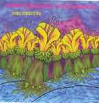

| Artist: | Radio Massacre International |
| Title: | Emissaries |
| Label: | Cuneiform Records Rune 211 |
| Length(s): | 60+76 minutes |
| Year(s) of release: | 2005 |
| Month of review: | [11/2005] |
| 1) | Seeds Crossing The Interstellar Void | 16.23 |
| 2) | A Priest Crossing Frozen Water | 13.24 |
| 3) | Mad Bob's Self-Inflicted Torment | 9.59 |
| 4) | The Emissaries Reveal Themselves | 9.09 |
| 5) | The Ice Garden | 7.37 |
| 6) | A Promise Of Salvation | 3.28 |
Disc 2: Ancilliary Blooms
| 1) | An Interstellar Vacuum Is Far From Empty | 12.15 |
| 2) | Mobile Star Systems | 13.02 |
| 3) | A Piano Wanders The Incandescent Vapours | 11.12 |
| 4) | Sympathy For The Bedeviled | 9.36 |
| 5) | The Arrival Of The Seeds | 16.17 |
| 6) | Deliverance From Nuclear Winter | 14.13 |
Samples of Emissaries occur by kind permission of Cuneiform Records.
We move right into A Priest Crossing Frozen Water (well, it is a suite, ain't it?). We get the same components: gurgly, sizzling synths, gloomy mellotron, and overneath the sequencers are dancing. Always when I see reviews of this type of music, they talk of fat sequencer work, but to me this still sounds very lighthearted. Along the way, the guitar starts to improvise over the rhythmic backdrop. The obvious reference is still Tangerine Dream of the seventies (but now a bit later in those seventies). The music can be quite intense, but although the synth sounds can be rather high pitched in places, the music stays subdued, as if in awe. The guitar sound at the end of this track is quite interesting, very echoey.
The weirdly titled Mad Bob's Self-Inflicted Torment is up next. During this cd, track lengths are steadily decreasing, in fact we are halfway with two thirds of the songs to go. Not that it matters much (it's a suite, ain't it?). Nothing mad about this introduction, it is even more serene than usual. And no sequencer as yet in sight. For some reason, I am thinking of Kitaro here, although certainly not as 'sweet'. A very sad track, surprisingly, swelling past halfway and turning more cosmic. The vocoder sounds disjointed and fragmented. Maybe this is Bob, ranting.
Track length drops to 9 minutes for The Emissaries Reveal Themselves. We hear the return of the sequencers, and the synth injections which add sound and detail to the music. The mellotron is also never far, bringing a full sound spectrum to the listener, but always relaxed, never imposing.
On The Ice Garden, the sequencers are gone again. leaving us to the zissers and such, ascending, descending, high-pitched and cold. Then we come to a percussive passage, which does seem like loose sand to me. This is more dark ambient styled. Later the relaxed mood returns. A Promise Of Salvation bring an end to this ehm Science Fiction story. Here, the guitar is relatively prominent again (but there is always a high amount of ehm environmental sounds that drown out much of it; it certainly does not lie on top of the music as is usually the case).
Disc two has an even higher average length than the first one. Called Ancilliary Blooms, I guess these are pieces of music that did not fit the 'story', but were beautiful in their own right.
First up is An Interstellar Vacuum Is Far From Empty (although I would call it empty before I would call it full). This signifies a bit of a return to the early tracks on disc one. The first part is all atmosphere, after four minutes or so, some more concrete elements set in, although sparingly. I guess, the emptiness of the music reflects the relative emptiness of space. Hey, we are encountering something, something eerie and angelic. Bird whistles? Mobile Star Systems opens percussively, after which the sequencers set in (first time on this disc!). The sequencers sound clear, later the single sequencer is accompanied by others, it is time it seems for the void to fill. One by one, the programmed patterns fill your ears. Past halfway this song really starts to thunder, with the guitar going manic. A bit more rousing than usual. More of this, please. We end with sequencers only.
A Piano Wanders The Incandescent Vapours is a slow opener, a bit in the vein of Floyd's Shine On, but noisier, rougher. The bass line that rumbles in places here, in fact reminded me of One Of These Days. Slowly, the volume increases with plenty of scary noises and mellotron. There is certainly a tension here. Contrast this with the almost shy piano, and you have one of my favourites right here. The lone guitar towards the end is outright bluesy.
The sympathies of RMI do not lie with those of the Rolling Stones, as evidenced by Sympathy For The Bedeviled. They do have a point. The role of the guitar is again on top of things: a lone wailer, and again reminscent of SOYCD. The church organ towards the end is nice for a change.
The Arrival Of The Seeds is back to the TD sequencer style of the seventies. Mesmerizingly, the notes percolate. Would Deliverance From Nuclear Winter be an optimistic track? The sequencers jingle friendly enough, although the programmed rhythms that come in later give the music a more threatening feel. The melodies are quite appealing. Slowly the sequencers work themselves into a sweat, and earrending effects enter the ehm picture. Do I hear some Moog there?